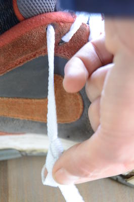
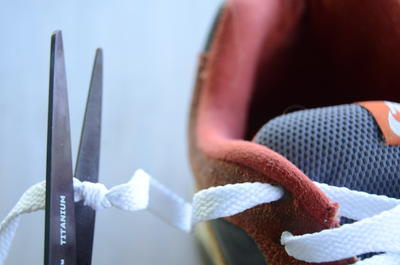
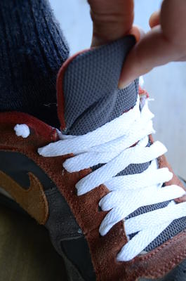
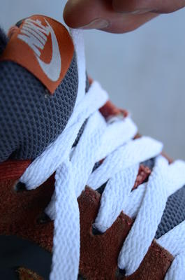
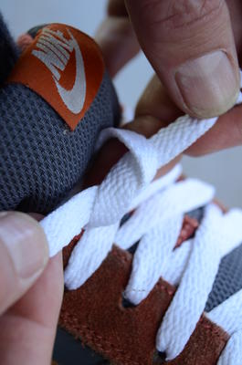
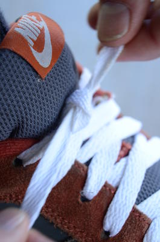
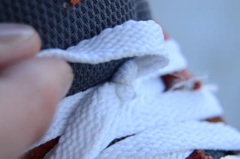
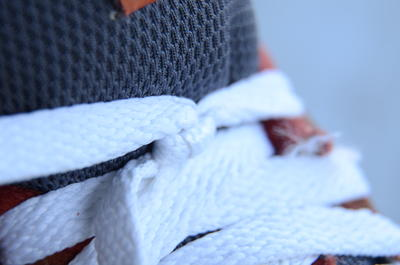
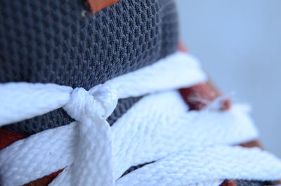

All you need are short shoelaces and a simple reef knot (no bows) and your laces will stay tied indefinitely.
While the traditional way of tying shoelaces uses a bow to allow for very easy untying,[1] these same bows also have a way of making the knot eventually come untied on its own.
So let's get started shortening up your laces!
First, with your shoe ON, snug up your laces but don't tie them yet.

Instead, tie a stopper knot in each shoelace where it meets the ground.
Second, trim the extra from each lace just after the stopper knot.
Now when you loosen your shoe, the stopper knot keeps you from losing the end of your lace down the top eyelet.
Finally, snug up your laces again. But this time finish it off with a simple reef knot, and pull it tight.
You can forget about them now. If they ever come untied on their own, tighten the reef knot more firmly next time. Reef knots really are durable when used for their intended purpose as a binding knot. (They're actually pretty horrible as a bend.)[3]
To untie it, capsize the reef knot by yanking one of the laces in the opposite direction.[2]
Once you feel it capsize, the rest unties effortlessly with your fingernails.